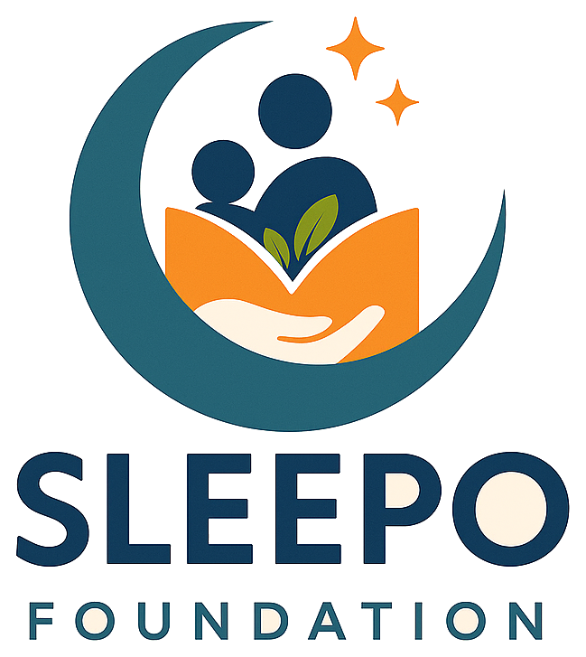

1
Pick an activity
Choose an activity of your liking from the list of activities available.

Microsoft GIVE 2026Bedtime is where children often feel safest, and where stories they hear help shape who they become. SLEEPO Foundation is a 501(c)(3) nonprofit that creates personalized bedtime stories for children ages 2–12.
Stories That Shape
This Microsoft GIVE season, give a few minutes to review a story, record one, answer a short survey, or share your skills, and be part of a child’s bedtime story.
By continuing, you agree to SLEEPO Volunteer Terms.
Most activities can be completed in a single sitting and repeated with different stories.
Choose an activity of your liking from the list of activities available.
Follow the on-screen instructions, submit your contribution, and log your eligible volunteer time in Benevity.
SLEEPO’s team listens to recordings and reviews submitted work before it reaches a family. Volunteers add time, judgment, and warmth to that process.